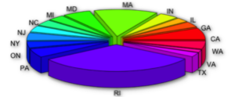

Portofolio of Yichi
Exploratory Data Analysis of Yelp


Yelp webpage
Motivation
Skills: Research
There are tons of businesses in the US. Business owners and customers all need to have a better knowledge of the services quality considering location, category and time issues. I hope my findings are useful for business owners to provide better services for customers as well as achieving better profits. Customers can use my findings to discover interesting and useful information when choosing business at different places and time.

#Reviews per person among states
Average number of reviews per person in each state
Targets
Skills: Brainstorm, Analysis
The four specific questions that I decided to explore for the Yelp’s, Academic Dataset are as follows:
1. Explore a relationship between users and their possibility to give high scores based on their average historical score. Then help business owners to find out who are the persons most willing to give high scores.
2. A relationship between business amounts of reviews and different states. In this part, people can see the absolute amounts of reviews in different states as well as the amounts of reviews per person in these states.
3. A relationship between the business categories and different schools. In this part, people can see which kind of category get the large number of reviews near different schools.
4. A trend of different amounts of ratings according to time. In this part, people can find a global trend that in which month customers’ reviewing behaviors is most active and inactive.
Variables stored and their formats
Data Source
Skills: Information searchingI used the Yelp's Academic Dataset. I got its information from its website: https://www.yelp.com/academic_dataset. The real dataset I used for coding is from the instructor’s offer in homework 2. It is a JSON format dataset. I downloaded it from the MBox provided by instructor. There are 474434 records in the JSON file. The dataset has three objects of data. I only use two objects of the dataset, review and business. Review type of data has 330071 records and business type of data has 13490 records.
Basic manage flow
Methods
Skills: Python, RFirst of all, I prepared the data by Python in order to read the data from JSON file, select the data I wanted, split the new I needed and store the organized data in tsv file. I also separated the date information to independent year and month columns aimed at providing suitable data for question four. After using Python, I did all the rest of works in R, including mainipulating missing data, filtering, aggregating and summing. Many problems have been encountered during the process, but have got successfully solved by trying different kinds of methods.

Outcomes
Users and their scores given
The x-axis labels are the anonymous user_ids. Each id represents each user in the Yelp dataset who has at least 30 reviews in his or her account. The y-axis is the average ratings. As we can see from the picture above, most of the users give average scores between 3 and 4. There are very few people give very high average scores and very low average scores. Businesses who want to have overall high scores can send coupons to those people in this graph who have very high average scores, because these people have high probabilities to give high scores in the future since they are willing to give high scores than other people.
Ratings and states
In the graph, x-axis labels are different ratings in different states; the y-axis labels are the numbers of reviews in different ratings in different sates. (Some states have no information from this Yelp dataset.) As we can see, California has the largest number of reviews, which is not surprised. However, after adding population element to the analysis, then the result was very different. In the second paragraph, this is a pie chart of the proportion represents average number of reviews per person in each state. What surprised me is that the state in which residents are most willing to review businesses is Rhode Island. Maybe because Rhode Island is a fairly small state, residents here are not in rush and have more time to review businesses. Also, because of small population, residents here may know businesses owners well, so they are willing to encourage the good services while comment on other services in order to improve the qualities of businesses.
Users and their scores given
In this graph, x-axis labels are different schools; the y-axis labels are different business category. Scatter will appear in the intercept point if that kind of business has more than 100 reviews in that school’s neighborhood. The more reviews that kind of business has, the heavier to circle stroke is. As it can be seen, for example, few popular businesses around University of Maryland-College Park and University of Massachusetts-Amherst are popular. Maybe because businesses there are ordinary, or people around these school have no hobby of reviewing businesses on Yelp. Yelp may need to motivate students more in these schools, if it want to get more information around these schools. What surprised me is that Bars around MIT got the largest number of reviews than other schools. It means that students from MIT more likely to go to bars and review bars using Yelp than other schools.
Users and their scores given
In the graph, x-axis labels are time stamps; the y-axis labels are numbers of reviews; colors represent the five different ratings. As it can be seen, in every year, June, July and August compose the peak in that year. Also, from every December to the following January, there is an extremely increasing trend. From my perspective, the large proportion of users using Yelp is student, June to August is the summer vacation, in which students have more relaxed time to go out for businesses and review them. December is the final month for fall semester, students are very busy, less time to enjoy outside businesses and give reviews. Christmas vacation cannot help increase the December’s value maybe because people in Christmas vacations are more willing to enjoy family happiness at home. January has a short vacation and the beginning of a semester, opportunities for students to go to all kinds of business and comment on them increase.

Users and their scores given
In the graph, x-axis labels are time stamps; the y-axis labels are values of the relative proportion of each star level; colors represent the five different ratings. At the beginning of the time stamps, the data is unstable, because Yelp was founded on October 2004. Few users at that time, so the users’ behaviors at that time period are not representative and have no regularities. Data before April 2005 (half year after foundation) can be ignored in some degree. As it can be seen from the graph, the relative proportion of each star level is relatively stable. Therefore the unstable situation of whole amount of reviews over times has no effect on the relative proportion of each star level. There are no correlation and causality between them.